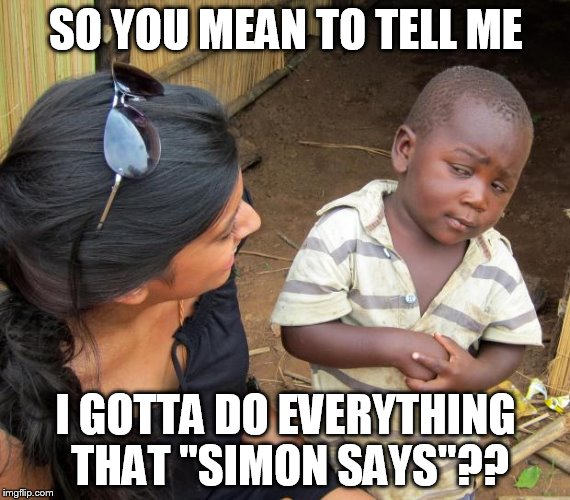

Hello! My name is Neil Patel.
Currently, I am a senior at the University of Pittsburgh pursuing a degree in Computer Engineering. For the summer of 2018, I am exploring a new side of technology as a Management Consulting Intern at KPMG. In the past, I worked as a Software Engineering Intern at Tata Consultancy Services working on the development of an autonomous android application to detect the number of cars in a parking lot using various image processing algorithms. This past semester(Spring 2018), I worked at RoadBotics, a Pittsburgh native startup that focuses on the analysis of road conditions in real time with the use of a phone application. At RoadBotics, I worked on the development of the android application to further improve the accuracy of data collected on different road surfaces.
Please feel free to take a look around.
Click here to view my résumé
At Pitt, I am involved in many student organizations. I am a Resident Assistant for the First Year Engineering Living Learning Community(LLC), a consultant for Students Consulting for Non-Profit Organizations(SCNO), a member of the Institute of Electrical and Electronics Engineers(IEEE) and in the National Residence Hall Honorary(NRHH).
In my free time, I like to listen to music, play sports with friends, and eat great food at the Pittsburgh restaurants.
On the side, I work on the development of various android applications to get better familiarized with Android Studio and its libraries.
Over the course at Pitt, I worked on various projects to further develop my knowledge of various topics. My junior in the Computer Engineering program has given me the opportunity to work in a wide range of programming languages. A couple of those projects are showcased here below.
On the side, I continually like to improve my software skills and stay up to date with the upcoming technological advancements.
I have showcased a few of the projects I have worked on below.
Click here to view my GitHub
A Java implemented GUI that allows users to paint stylistic images using shapes and different colors modeled off of Microsoft Paint. A project created in CS401 at the University of Pittsburgh.
For more information, please click the image to redirect to my GitHub repository.
A Java implemented Car Database System to help a user select which car to buy. A project created in CS1501 at the University of Pittsburgh. For more information, please click the image to redirect to my GitHub repository.
A Java implemented GUI that allows users to view, search, and sort customer data from a formatted CSV file. A small project I started during the school year and continued throughout the summer. For more information, please click the image to redirect to my GitHub repository.
A Ruby implemented CitySim simulation to get familiarized with writing Ruby software. A project created in CS1632 at the University of Pittsburgh. For more information, please click the image to redirect to my GitHub repository.
A Java implemented autocomplete search engine backed by a De La Briandais(DLB) Trie to predict what a user may enter before they finish typing. A project created in CS1501 at the University of Pittsburgh. For more information, please click the image to redirect to my GitHub repository.

A MIPS implemented Simon Says game designed to simulate the classic 70s game. A project created in CS447 at the University of Pittsburgh. For more information, please click the image to redirect to my GitHub repository.